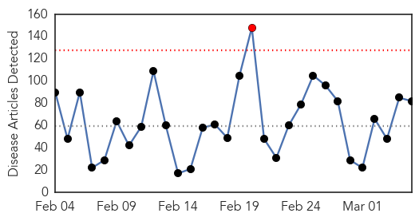
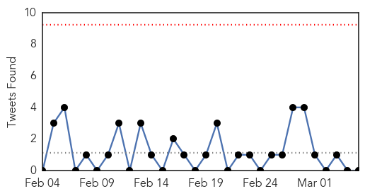
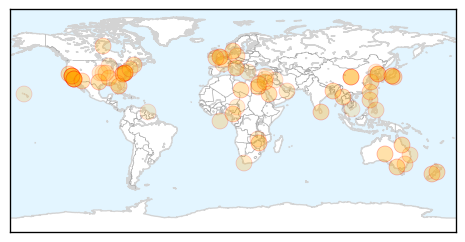

30 Day Trends
Web: 1 alerts, 0 warnings
Twitter: 0 alerts, 0 warnings
Top Articles:
- 0.976
- New IRT salmonella cases cause concern
- 0.974
- Ross River virus explained
- 0.953
- Patient who died at Young VA had bacteria that causes Legionnaire's Disease
- 0.941
- Cedars-Sinai Reported Four Superbug Infections, FDA Under Scrutinity
- 0.930
- Only 17% of hospitals accredited in Saudi's Eastern Province
- 0.917
- Chicago Tribune
- 0.917
- Chicago Tribune
- 0.917
- Chicago Tribune
- 0.917
- Chicago Tribune
- 0.917
- Chicago Tribune
- 0.917
- Chicago Tribune
- 0.917
- Chicago Tribune
- 0.917
- Chicago Tribune
- 0.917
- Chicago Tribune
- 0.917
- Chicago Tribune
- 0.917
- Chicago Tribune
- 0.917
- Chicago Tribune
- 0.917
- Chicago Tribune
- 0.917
- Chicago Tribune
- 0.917
- Chicago Tribune
- 0.917
- Chicago Tribune
- 0.917
- Chicago Tribune
- 0.917
- Chicago Tribune
- 0.917
- Chicago Tribune
- 0.917
- Chicago Tribune
- 0.917
- Chicago Tribune
- 0.910
- The world windows to Thailand
- 0.896
- 4 patients infected with 'superbug' at second Los Angeles hospital
- 0.888
- Gastrointestinal virus contracted by 15 Windsor hospital staff
- 0.877
- UN health agency notes possible threat of polio spread in conflict-affected countries
- 0.866
- Islamic State torches oil field near Tikrit as militia advance
- 0.860
- 'Superbug' infections hit another Los Angeles hospital
- 0.845
- California superbug: Cedars-Sinai Medical Center reports 4 patients infected with 'superbug'
- 0.842
- Syphilis on the rise in Pima County
- 0.840
- Staff and pupils to be screened after TB case confirmed at Torquay school
- 0.835
- Second Los Angeles hospital reports 'superbug' infections
- 0.833
- California: More Drug-Resistant Cases Are Linked to Medical Device
- 0.821
- Spared by bullets, 1,600 who fled war stricken by diseases
- 0.818
- Maine Voices: UNE researchers at forefront in the mission to squash superbugs
- 0.817
- Second Ca. hospital reports superbug outbreak — RT USA
- 0.811
- Olympus : Second Los Angeles hospital reports 'superbug' infections tied to tainted medical scope
- 0.792
- Infectious diarrhea cases spike to 6-year high in Taiwan: CDC
- 0.784
- Deadly salmonella strain in Belconnen nursing home Kangara Waters traced to South Coast bakery Betta Maid
- 0.766
- Superbug outbreak extends to Cedars-Sinai hospital, linked to scope
- 0.739
- Taking care of yourself physically helps you mentally
- 0.733
- Bacteria suspected in death of St. Charles County mom and son
- 0.723
- RSPCA Queensland to inspect Goodna property affected with deadly Parvovirus
- 0.715
- CRE superbug hits second LA hospital; 4 infected - Story
- 0.697
- Georgia reports 1st Porcine Epidemic Diarrhea virus cases
- 0.693
- Widow sues Virginia Mason; hospital begins notifying ‘superbug’ victims
Showing top 50 articles...
Top Tweets:
-
No tweets found for Mar 05, 2015
Web/News Articles
Tweets
Article Locations
Article Confidences